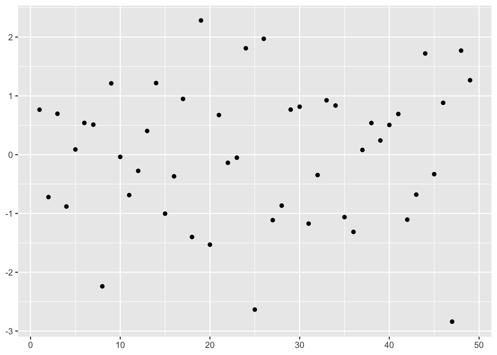

Chapter 3 Lab 1
3.1 Iris Dataset
Download the dataset at this link (https://archive.ics.uci.edu/ml/datasets/iris)
(look for the iris.data file) and place the file together with your R script (for simplicity).
At that web page, you can also get some information regarding the origin and
nature of the data.
The dataset is available as Comma-Separated Values (CSV) file, which is nothing
but a plain text file where each row is a row of a table and every column is separated
by a comma. To make it look more like a CSV file, rename it from iris.data to iris.csv.
3.2 Import data
Now we’re ready to import the data in R and view it as a table.
Hint: use
read_csv()function from thereadrlibrary. Check the function arguments. Also, you might need to manually add the column names. To check which column names should be added and in which order, check under “attribute information” on the dataset reference page linked above.
library(tidyverse) # we will use tibble, dplyr, ggplot, readr, ...iris_df <- read_csv("./datasets/iris.csv",
col_names = c(
"sepal_length", "sepal_width",
"petal_length", "petal_width", "class"
)
)## Rows: 150 Columns: 5
## ── Column specification ────────────────────────────────────────────────────────
## Delimiter: ","
## chr (1): class
## dbl (4): sepal_length, sepal_width, petal_length, petal_width
##
## ℹ Use `spec()` to retrieve the full column specification for this data.
## ℹ Specify the column types or set `show_col_types = FALSE` to quiet this message.iris_df## # A tibble: 150 × 5
## sepal_length sepal_width petal_length petal_width class
## <dbl> <dbl> <dbl> <dbl> <chr>
## 1 5.1 3.5 1.4 0.2 Iris-setosa
## 2 4.9 3 1.4 0.2 Iris-setosa
## 3 4.7 3.2 1.3 0.2 Iris-setosa
## 4 4.6 3.1 1.5 0.2 Iris-setosa
## 5 5 3.6 1.4 0.2 Iris-setosa
## 6 5.4 3.9 1.7 0.4 Iris-setosa
## 7 4.6 3.4 1.4 0.3 Iris-setosa
## 8 5 3.4 1.5 0.2 Iris-setosa
## 9 4.4 2.9 1.4 0.2 Iris-setosa
## 10 4.9 3.1 1.5 0.1 Iris-setosa
## # … with 140 more rowsAnswer these questions:
- How many observations does the dataset consist of?
- Which are the different classes?
iris_df %>%
nrow()## [1] 150iris_df %>%
pull(class) %>%
unique()## [1] "Iris-setosa" "Iris-versicolor" "Iris-virginica"3.3 Exploratory Data Analysis (EDA)
First compute the mean and standard deviation of each measure for each class separately.
iris_df %>%
group_by(class) %>%
summarize(
msl = mean(sepal_length), msw = mean(sepal_width),
mpl = mean(petal_length), mpw = mean(petal_width),
ssl = sd(sepal_length), ssw = sd(sepal_width),
spl = sd(petal_length), spw = sd(petal_width)
)## # A tibble: 3 × 9
## class msl msw mpl mpw ssl ssw spl spw
## <chr> <dbl> <dbl> <dbl> <dbl> <dbl> <dbl> <dbl> <dbl>
## 1 Iris-setosa 5.01 3.42 1.46 0.244 0.352 0.381 0.174 0.107
## 2 Iris-versicolor 5.94 2.77 4.26 1.33 0.516 0.314 0.470 0.198
## 3 Iris-virginica 6.59 2.97 5.55 2.03 0.636 0.322 0.552 0.275- What can you infer? Is there any measure which is more indicative of a certain class?
You can also plot the empirical distribution of the four measures separately, in order to better visualize how far (or close) they are from each other.
- Plot the distributions of the four measures in a 2x2 grid, differentiating the types with color encoding (optional).
Hint: You can use
melt()from thereshape2library to transform the dataset, and then plot the various densities with color encoding on the four measures.
library(reshape2)##
## Attaching package: 'reshape2'## The following object is masked from 'package:tidyr':
##
## smithsiris_df %>%
melt(value.name = "measure") %>% # collapse all measures in one col
# then add a column with the measure name
ggplot() +
geom_density(aes(measure, color = class)) +
facet_wrap(vars(variable), nrow = 2, scales = "free")## Using class as id variables
We can also visualize the four measures on a set of plots that shows the correlation between variables, two-by-two. This is easily done with a pair plot.
- Draw a pair plot (optional).
Hint: install the package with
install.packages("GGally")and load it withlibrary(GGally), then read the help document of theggpairs()function. You can also use R basepairs()function.
library(GGally)## Registered S3 method overwritten by 'GGally':
## method from
## +.gg ggplot2iris_df %>%
ggpairs(mapping = aes(color = class), columns = 1:4)
3.4 Confidence intervals
Let’s make our decision more statistically relevant. Select only one class, the Setosa type, and one measure, petal length.
Now build a 95% CI around the mean value of the Setosa petal length. Assume \(\sigma\) unknown.
Formally, we want to find \(x_l, x_u\) s.t. the true mean \(\mu\) of the Setosa petal length falls in the interval with probability 95%:
\[ P(x_l \leq \mu \leq x_u) = 95\%\,. \]
- Find such CI, using only R base operators (
mean,sd).
To do this, remember that
\(\frac{(\bar{X} - \mu)\sqrt{n}}{s} \sim T(n-1)\) where \(s\) is the sample standard deviation
qt()is the R function for the t-distribution quantileValidate your result by using
t.test()to get the CI.
setosa_petal_length <- iris_df %>%
filter(class == "Iris-setosa") %>%
pull(petal_length)
alpha <- .05
nspl <- length(setosa_petal_length)
crit_t <- qt(1 - alpha / 2, nspl - 1) # critical value
# retransform the critical value multiplying the se
# and subtracting it to the sample mean
xbar <- mean(setosa_petal_length)
se <- sd(setosa_petal_length) / sqrt(nspl)
delta <- crit_t * se
ci <- c(xbar - delta, xbar + delta)
ci## [1] 1.414689 1.513311With t.test
t.test(setosa_petal_length, conf.level = 0.95)##
## One Sample t-test
##
## data: setosa_petal_length
## t = 59.662, df = 49, p-value < 2.2e-16
## alternative hypothesis: true mean is not equal to 0
## 95 percent confidence interval:
## 1.414689 1.513311
## sample estimates:
## mean of x
## 1.464Compare this confidence interval to the mean and std-dev values you got for each class for the petal length measure.
- Do you think the petal length is a good measure to differentiate between Setosa and the other two types? Why?
3.5 P-value
Imagine you get measurements in terms of all 4 indicators of 5 iris flowers belonging to the same class, but you don’t know which. These are the observations.
x_sample <- tibble(
sepal_length = c(4.738759, 5.545983, 5.389729, 4.549803, 5.896723),
sepal_width = c(3.132478, 3.537232, 3.217107, 3.190097, 3.636949),
petal_length = c(1.220472, 1.321923, 1.573662, 1.289875, 1.705737),
petal_width = c(0.23, 0.09, 0.33, 0.22, 0.18)
)- Just looking at the values of the petal length, can you take advantage of the CI you just computed in order to make a guess about the class of these flowers? (Setosa or not Setosa)
To make this guess more statistically relevant, we have to quantify our confidence.
What is the p-value of this sample, only looking at the petal length, against the null hypothesis that the samples are coming from the Setosa type? We set the null hypothesis to be \(H_0: \mu = \mu_0 = \bar{x}\)
Remember that the p-value is defined as
\[ P\left(T \geq \frac{(\bar{x} - \mu_0)\sqrt{n}}{s} | \mu = \mu_0\right)\]
- Based on the value you found, what can you say about the class of this sample?
# manually
mu0 <- xbar
nx <- nrow(x_sample)
t_stat <- (mean(x_sample$petal_length) - mu0) * sqrt(nx) /
sd(x_sample$petal_length)
pt(t_stat, df = nx - 1, lower.tail = FALSE)## [1] 0.6619335# with t-test
t.test(x_sample$petal_length, mu = mu0)##
## One Sample t-test
##
## data: x_sample$petal_length
## t = -0.44983, df = 4, p-value = 0.6761
## alternative hypothesis: true mean is not equal to 1.464
## 95 percent confidence interval:
## 1.165161 1.679506
## sample estimates:
## mean of x
## 1.422334Now take this other sample:
y_sample <- tibble(
sepal_length = c(6.303990, 6.705969, 7.795044, 7.015665, 7.056670),
sepal_width = c(3.152411, 2.499612, 3.293934, 3.275724, 2.843923),
petal_length = c(6.356729, 5.975576, 4.998114, 5.423811, 5.382871),
petal_width = c(1.589342, 2.305014, 2.260900, 2.185519, 1.589370)
)- What is the p-value?
- Is it higher or lower than 0.025?
- Could we guess the answer to this last question without computing it?
# manually
ny <- nrow(y_sample)
t_stat <- (mean(y_sample$petal_length) - mu0) * sqrt(ny) / sd(y_sample$petal_length)
pt(t_stat, df = ny - 1, lower.tail = FALSE)## [1] 3.231502e-05# with t-test
t.test(y_sample$petal_length, mu = mu0)##
## One Sample t-test
##
## data: y_sample$petal_length
## t = 17.36, df = 4, p-value = 6.463e-05
## alternative hypothesis: true mean is not equal to 1.464
## 95 percent confidence interval:
## 4.961539 6.293302
## sample estimates:
## mean of x
## 5.62742